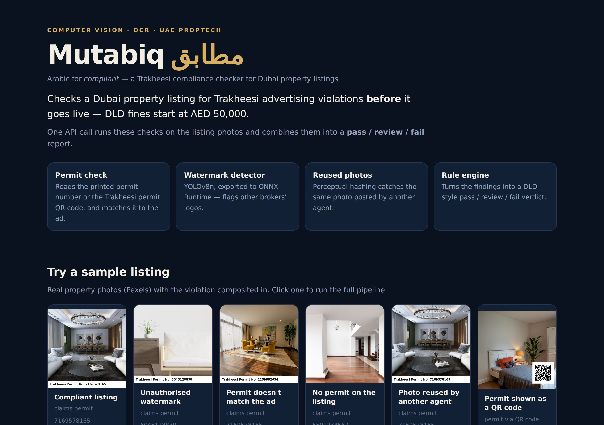
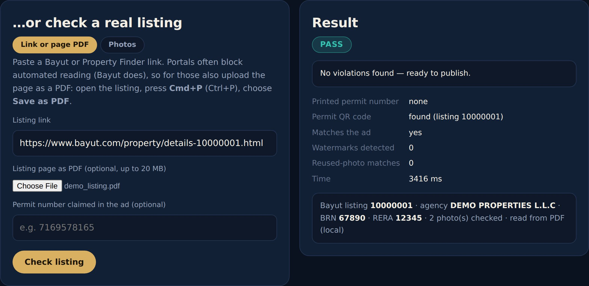
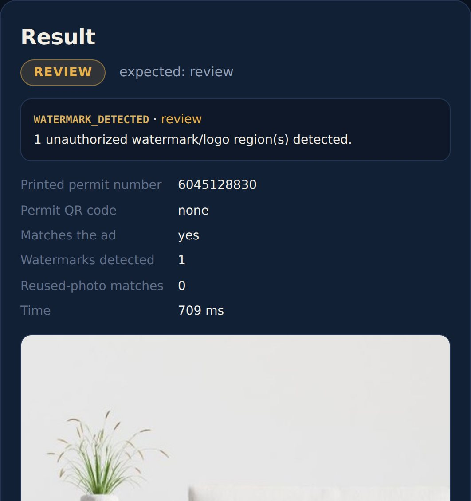

Arabic for compliant
Checks a Dubai property ad for Trakheesi advertising violations before it goes live, from a listing link, the saved page, or its photos.
It reads the signed DLD permit QR, pulls the Regulatory Information with Azure AI Document Intelligence, reads photos with Azure AI Vision, spots other brokers' watermarks with a YOLOv8 model, and catches photos re-posted by another agent, then combines everything into a pass / review / fail verdict.
Every property ad in Dubai needs a valid Trakheesi advertising permit from the Dubai Land Department, and today that permit is shown as a signed QR code. Agencies publish hundreds of listings a week, so a few slip through: no permit, a permit copied from another ad, a photo carrying another broker's logo, or a photo lifted from someone else's listing. Mutabiq catches these before the ad is published, not after the fine.
No permit QR or number, a number that differs from the ad, or a QR that belongs to a different listing.
The usual sign of a copied photo. The agency's own logo is allowed, and Mutabiq tells the two apart.
Perceptual hashing finds the same photo even after re-cropping or re-compression.
Six one-click sample listings show each outcome. For a real ad, paste the Bayut or Property Finder link and upload the page saved as a PDF, or upload the photos.



Each verdict is pinned by a test, so a change that breaks one fails CI.
Each input goes through the readers that fit it; the checks only see what the readers extracted; a small rule engine makes the call. Every number in the verdict can be traced back to the check that produced it.
Synthetic samples prove the pipeline runs. A real Bayut villa listing showed where it was wrong, and each fix below came from that one ad.
The permit wasn't printed anywhere: the ad carries only a signed DLD QR code. OCR "found" two permits that were really listing IDs in the browser's address bar, and the detector flagged 21 page elements as watermarks.
The QR decodes to a validation link with the listing ID and an ECDSA signature, so the QR now counts as the permit. A number only counts as a permit when a Permit / Trakheesi label sits next to it.
The portal answers automated requests with HTTP 401, and Mutabiq doesn't try to get around that. The user saves the page; Document Intelligence reads the agency, BRN and RERA, and only real photos are checked. The page also prints other agencies' listings under "Recommended for you"; photos after that heading are left out. False flags: 21 → 1.
The last flag was the agency's own gold logo, which is allowed. Azure AI Vision reads the mark, and a fuzzy match against the distinctive word of the registered agency name clears it. Another broker's mark would still be flagged. False flags: 1 → 0.
prebuilt-layout with the barcode add-on reads the page text and the permit QR in one call, with the PDF's own text layer as a cross-check for two-column boxes.
Read OCR finds printed permit numbers in about 0.3 s per listing and reads stylised logos that local OCR can't.
FastAPI + ONNX Runtime in UAE North. GitHub Actions tests every push and builds the image; the deploy waits for the exact commit's build.
One polite request, robots.txt checked, an honest User-Agent. When the portal blocks it, the link is still used to cross-check the listing ID and the page comes in as a PDF.
The detector runs at a low threshold because a false alarm only means "review". The own-logo test and the "Recommended for you" cut-off remove false alarms with evidence, not by lowering sensitivity.
Azure down or out of quota → local Tesseract, zxing and pypdfium2 give an answer. An unreadable logo stays flagged, which is the safe default.
Checks are keyed by the portal listing ID, so re-checking the same ad is never reported as a reused photo, while the same photo under another ID is.